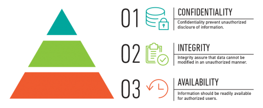
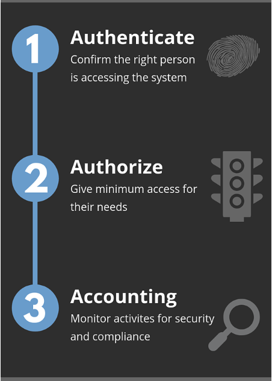

The first domain in CompTIA’s Security + exam (SYO-501) covers threats, attacks and vulnerabilities. This domain contributes 21 percent of the exam score. The exam’s objectives are covered through knowledge, application and comprehension, and the exam has both multiple-choice and performance-based questions. The performance-based questions are designed to test the candidate’s ability to troubleshoot problems in a simulated environment.
You will be learning different types of security compromises, the types of actors involved, and the concepts of penetration testing and vulnerability scanning.
A threat is a possible danger that might exploit a vulnerability to breach security and therefore cause possible harm.
An attack is any attempt to expose, alter, disable, destroy, steal or gain unauthorized access to or make unauthorized use of an asset.
A vulnerability is a weakness which can be exploited by a threat actor (attacker), to perform unauthorized actions within a computer system.
An exploit is a piece of code, data or a sequence of commands that takes advantage of a vulnerability to cause unintended or unanticipated behavior to a computer resource.
CIA triad is a model designed to guide policies for information security within an organization.
The elements of the triad are considered the three most crucial components of security.

A-A-A refers to Authentication, Authorization and Accounting
Authentication:
Process that ensures and confirms a user’s identityAuthorization:
Is the function of specifying access rights/privileges to resourcesAccounting:
The process of logging the actions the user took while accessing the resources
"Malware (malicious software) is any software intentionally designed to cause damage to a computer, server, client, or computer network"
Malware that constantly changes its identifiable features in order to evade detection. Polymorphic techniques involve frequently changing identifiable characteristics like file names and types or encryption keys to make the malware unrecognizable to many detection techniques.
Polymorphism is used to evade pattern-matching detection relied on by security solutions like antivirus software. While certain characteristics of polymorphic malware change, its functional purpose remains the same.